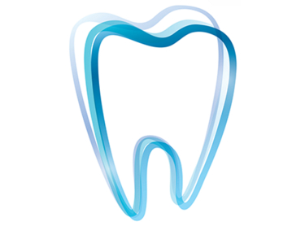

Доступная цена и отличный результат. Рекомендую всем!
Доступная цена и отличный результат, теперь я улыбаюсь с уверенностью!
Выглядят натурально и стоят гораздо меньше, чем я думал, очень доволен!
Удобные, просты в уходе и выглядят шикарно!
После установки съемных виниров чувствую себя новым человеком.

Благодаря съемным винирам я не могу перестать улыбаться.
Нашел решение для своей улыбки в съемных винирах.
Съемные виниры изменили мою жизнь – улыбка стала идеальной.
Доступная цена
Мгновенный эффект
Удобство
Легкость установки
Закажите набор
Получите виниры
Сделайте слепки
Как выбрать правильный размер виниров?
Мы предоставляем подробные инструкции и поддерживаем вас на каждом шаге.
Как долго служат виниры?
При правильном уходе виниры могут служить многие годы.
Начните прямо сейчас и получите идеальные виниры на дом!
В последние годы стоматология претерпела значительные изменения, и одним из самых заметных трендов стал рост популярности съемных виниров, которые можно установить в домашних условиях. Эти инновационные решения предлагают потребителям удобство и экономию, бросая вызов традиционным методам коррекции зубов.
Съемные виниры представляют собой тонкие пластиковые или композитные накладки, которые надеваются на зубы, чтобы улучшить их внешний вид. Эти изделия помогают скрыть эстетические недостатки, такие как потемнение, неровности или трещины, и могут быть установлены без необходимости посещения стоматологической клиники. С помощью съемных виниров пользователи могут добиться желаемой улыбки без сложных процедур и высоких затрат.
Один из основных факторов, способствующих популярности съемных виниров, — их цена. Традиционные виниры, которые требуют профессионального изготовления и установки, могут обойтись в несколько тысяч долларов. В то время как съемные виниры значительно дешевле, что делает их доступными для широкой аудитории.
Процесс установки съемных виниров был оптимизирован для домашних условий. В комплект входит набор, который позволяет пользователю самостоятельно создать точные формы зубов. Виниры изготавливаются в лаборатории на основе миллионов улыбок. Это исключает необходимость сложных стоматологических процедур и посещений.
Съемные виниры предлагают пользователям гибкость. Они могут быть легко установлены и сняты по желанию, что позволяет менять внешний вид в зависимости от ситуации или настроения. Это также делает их удобным вариантом для тех, кто ищет временное решение или хочет испытать новый стиль улыбки перед принятием более постоянного решения.
Процесс получения и установки съемных виниров включает несколько этапов:
Стоматологи по-разному относятся к этой новинке. Некоторые считают, что съемные виниры могут быть полезным инструментом для временного улучшения внешнего вида зубов. Однако другие эксперты предупреждают о возможных рисках, таких как неполное прилегание виниров или их возможное воздействие на здоровье зубов и десен.
Доктор Лариса Ковалёва, стоматолог из Лондона, отмечает:
Съемные виниры предоставляют удобное и доступное решение для тех, кто ищет быстрые результаты. Тем не менее, важно учитывать, что длительное использование таких виниров может потребовать регулярного контроля и ухода.
Съемные виниры, которые можно установить дома, представляют собой значительный шаг вперед в области косметической стоматологии, предлагая удобное и доступное решение для тех, кто хочет улучшить свою улыбку без больших затрат и длительных процедур. Тем не менее, пользователям следует быть внимательными и учитывать возможные риски, связанные с их использованием.
Начните прямо сейчас и получите идеальные виниры на дом!